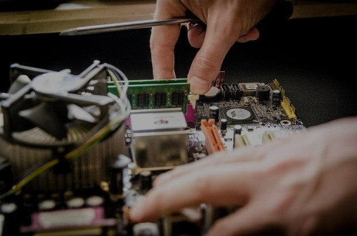

Servicio de reparación
de equipos informaticos en desuso:
Nuestro proceso de reparación de equipos informáticos de desuso es un compromiso integral con la calidad y la sostenibilidad. Cada dispositivo es sometido a una evaluación meticulosa y reparación por parte de nuestros expertos, utilizando tecnología avanzada y piezas de alta calidad. Más allá de restaurar la funcionalidad, nos esforzamos por implementar prácticas ecoeficientes, contribuyendo así a la reducción de residuos electrónicos y al fomento de la sostenibilidad. En PeppoBytes, no solo reparamos equipos, sino que también transformamos la tecnología para un mundo más sostenible.